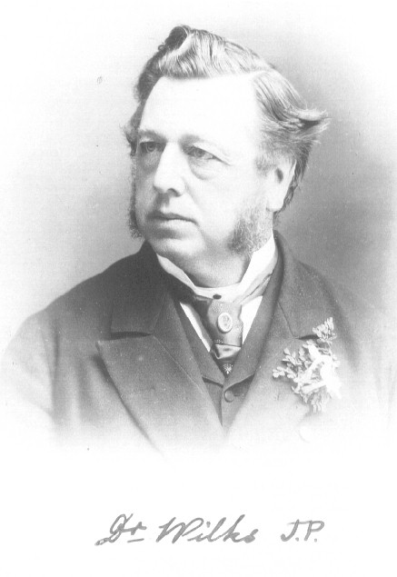
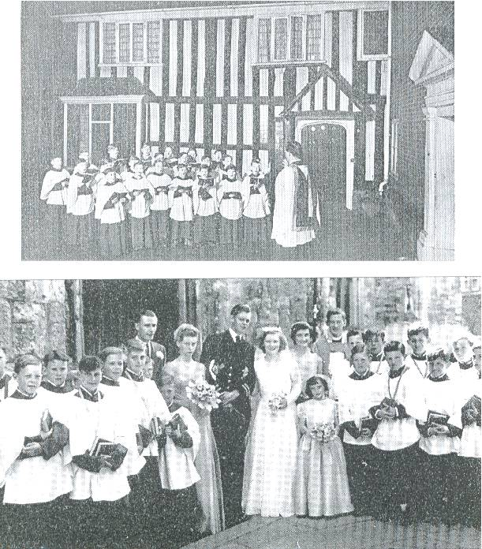
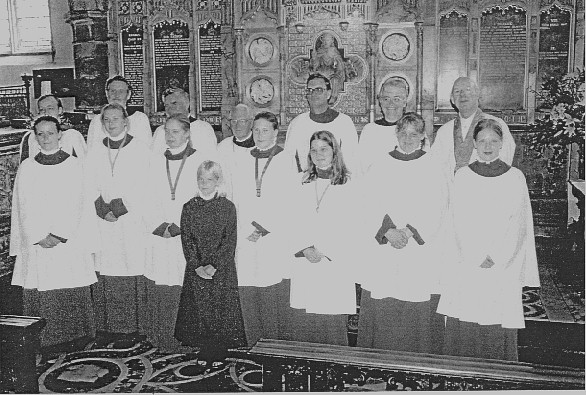

Traditional Church of England in Ashford
“That even now, while we are placed among things that are passing away; to cleave to those which shall abide”
 Ashford Parish Church Choir in 1936 when Dr Paul Steinitz,
founder of the London Bach Society, was Organist & Choirmaster.
Ashford Parish Church Choir in 1936 when Dr Paul Steinitz,
founder of the London Bach Society, was Organist & Choirmaster.
St Mary the Virgin Ashford – Christmas with the Parish Church Choir in the 19th Century
It is most intriguing what can be discovered by a cursory glance around
part of a church. What I discovered were two fine books with
cloth board covers of green, and Gilt edging/ wording dated about 1860
and entitled “Christmas Carols; New and Old”- words edited
by Rev Henry Ramsden Bramley, MA Fellow and Tutor of St Mary Magdalen
College, Oxford: Music edited by John Stainer MA, Mus Doc. of the same
college. The books were printed by Novello, Ewer & Co.,
London & New York, and sold at a price of 4/-. Inside they
are stamped “H.J. Goulden & Wind, 35 Bank Street
Ashford” on the first page, and with a very attractive antiquated
Ashford Parish Church Choir stamp on the inside cover. Within
this stamp is a number – on one 43, and on the other 52, and
No.52 is the Organ copy. Fortunate, indeed that the Organ copy
has survived, for here we glean so much information about the Carols
sung in the latter part of the 19th Century, under the Precentorship of
Dr Wilks. We can obviously tell that there were at least 52
copies of the book, and they are specifically for Choirs, not
congregation. This adds extra evidence of the strength of the
Choir in those days, and, as will be seen, there were just a few
regular soloists - obviously the men and boys with the finest voices -
who brought the hearts and minds of the townspeople that bit closer to
the Christ-child lying in the manger.
The Index which I have reproduced with this article, will be of great
assistance to the reader who wishes to glance at each Carol I mention
here, and ascertain the author, and composer. This Index,
however, is taken from a copy of the same Carol book which I discovered
in Little Chart new church during a bellringing visit in October 2004,
and which was printed by Novello in 1951 price 6s and 9d. Whereas
the old books we have here sustitute many ‘s’ letters for
‘f’, which is actually quite unusual for as late a period
as 1860, the 1951 book is printed with the normal
‘s’. This is of great assistance to you, the reader
– and how marvellous that 90 or so years after our carol books
were printed, they were still printing exactly the same book! It
is splendid, too, how I should stumble across this newer printing quite
by chance – some might say coincidence, but perhaps we should
say, Divine providence!
Anyhow, I intend now to give details of the Carols, used here at
Ashford, the soloists, and one or two asides which I have noted during
my duties within our lovely old Church.
It is interesting to note that only the following Carols were deemed
acceptable for use in sacred places: 1-9, 13-17, 19-22, 26, 27, 29-32,
34, 36, 38, 41, 43,44, 46-48, 50, 53-55, 57, 58, 60, 62, 65, 66,70.
“The rest may fitly be reserved for less sacred places and
occasions”. Of course, in those days the guard against
irreverence was very tight – unlike the rather sad
‘anything goes’ culture of this unfortunate era.
So, we open the Organ copy at No.1, and discover that God rest ye merry
Gentlemen was sung here; in harmony and without solos. No.3 A
Virgin unspotted: V1 in parts, V2 Full, V3 Trebles, V4 Full, V5 Men
sing the first half and the second half is Full choir in parts, V6 is a
Quartett – Treble~Brimley, Alto~Head, Tenor~A. Pearce and
Bass~Dyson. We have a board on the belfry wall recording a peal
of J.Holts 10-part Grandsire Triples, Feb 29th 1908, conducted by
Arthur J. Dyson. Was this the same gentleman? V7
Treble~Brimley and V8 Full. We know this carol today with the
slightly different words of ‘A Virgin most pure’, but the
tune is the same.

Dr Wilks: founder of the Choir, and Organist, Choirmaster and Precentor approx 1840 - 1920
No 4 Come ye lofty: V1 in parts, V2 Full, V3 Boys, V.4 Men and V.5
Full. No 6 The First Nowell : This page is VERY dog eared –
the first 25 pages were falling out until I tipped them back in with
glue! I suspect this carol was sung Full in parts, very
regularly! No 8 Good Christian Men Rejoice: V1 in parts, V2
Treble~Swaffer and Barnett. Alto~Head, Tenor~Civelic,
Bass~Pearce. A George Swaffer is recorded on a peal board in the
belfry of a peal of Stedman Triples May 11th 1936 Conducted by C.W.
Everett. Is this the same Gentleman as the one who sang solos
here as a boy in the late 19th Century? V3 is Full.
No 10 Good King Wenceslas: V1 Full in parts. The next three
verses alternate between Tenor~Crocker, and Treble~Williams. V5
Full chorus in parts. No 13 On the birthday of the Lord: V1,3,4
Full in parts, and V2 Men in Unison. No 16 Waken Christian
Children: V 1,2 Full, V3 Boys, V4 Men, V5 Full V6 Tenor~Beening V7 Full
V8 Boys and V9 Full. No 17 A Child this day is born: V1-4 in
parts and V5 in Unison. No 19 When Christ was born of Mary free
(to an old tune)V1 Full in parts, V2 ½ men ½ boys, V3
Boys, V4 ½ Full ½ boys. No 20‘Twas in the
Winter Cold: All 5 verses in parts except V4 Men in Unison (this Carol
is marked up in the same way in Carol Book No 43). No 24 The moon
shines bright: V1 Full in parts V2 A boy, V3 in parts, V4 Men, V5 in
parts, V6 is a Quartett – Treble~Butcher, Alto~Head, Tenor~West,
Bass~Dyson, V7 Men, V8 Boys, V9 Unison and V10 Full in parts. It
is interesting to note at verse 7 the line “Instruct and teach
your children well” and reminds of the importance of handing down
Christian principles to the next generation. Now deeply
unfashionable, how the church needs this today!!
No 26 The Incarnation: V1 Full in parts, V2 Quartett –
Treble~Williams, Alto~Head, Tenor~Civelic, Bass~Dyson, V3 Quartett
- Treble~Wright, Alto~Barnett, Tenor~Williams, Bass~Thompson, V4
Men, Full, V5 Quartett – Treble~Williams, Alto~Head, Tenor~Hole,
Bass~Dyson, and V6 Full. We note here that it appears that
‘Head’ were father and son. A George Head is recorded
on a board on the belfry wall, as taking part in a peal of 5024 Kent
Treble Bob Major here on Feb 11th 1899. This was presumably the
father. (This carol is also marked up in Carol Book No 43, but
without specific details of the soloists)
No 30 See amid the Winter Snow: V1 Full in parts, V2 Solo~Taylor, V3
Solo~G. Elgar, V4 Solo~N. Harris, V5 Boys only and V6, Full in
parts. There are later markings in both this and Carol Book No 43
suggesting that V2 was Full, V3 Solo, and V4 Men only. The tune
by Sir J. Goss, this would have been one of the new carols at the time,
and is still a favourite today. No 31 The Babe of Bethlehem: V1
Full in parts, V2 Unison, V3 Boys, V4 Unison, V5 Boys and V6
Full. No 33 A Cradle song of the Blessed Virgin: V1 Full in
parts, V2 Boys with Full Chorus, V3 Full, V4 Men with Full Chorus, V5
Full. No 34 Christmas Song: V1,3,4 Full in parts, V 2,6 Boys and
V5 Men. No 35 Jacobs Ladder (Which can be found in our New
English Hymnal) V1 Full in parts, V2 Quartett – Treble~Barnett,
Alto~Head, Tenor~Crocker and Bass~Dyson, V3 Trebles and V4 Full.
All the choruses sung Full.
In Carol Book No 43, Carol No 37 The Wassail Song has written at the
top of the page “Sung at Leeds Castle, 1889”. It
appears that the 19th Century Choir must have travelled there to enrich
the Christmas festivities, maybe every year. There are no details
of how the verses were marked, and it would certainly be interesting to
find out more about this excursion, if possible. At this time the
Castle was owned by the Wykeham-Martins, and was in quite a serious
state of disrepair.
No 45 We Three Kings: Most interesting to note that Verse 2 was sung by
the Vicar, very hierarchically apposite, and of course the Incumbent at
this time would have been Canon P.F. Tindall. How wonderfully
this carol must have been redered – V1 Full in parts, V2
(Melchior) The Vicar, V3 (Caspar) A boy, V4 (Balthasar) Hedgling, V5
Full in parts. Of course, we still sing this Carol today, more
often at The Epiphany.
No 46 Emmanuel; God with us: V1 Full in parts, V2 Men, V3 Full, V4 Boys
and V5 Full in parts. The final carol sung by the choir No 67
– The Boy’s Dream: V1 Full in parts, V2 Bass Solo~Hallett,
V3 Men-Full, V4 Treble Solo~Williams and V5 Full.
So, from this investigation, we can build up something of a picture of
how our Parish Church Choir operated in the 19th Century, here in our
glorious edifice. It appears that the markings in these books
date from the late 19th century, and indeed Mr F.C. Palmer’s
knowledge has been invaluable in confirming that the books have
certainly not been in use by our choir since the Second World War (and
the other books presumably met their end many years ago). Of
course, if anyone would like to view the books, they are most welcome,
and are stored safely in our Archive Room.
Obviously, I should like to wish peace on earth and good will toward
all men at this time, and hope that this short insight into the past
will stir the imagination of one and all, and be something for us to
build a strong future upon.
Christopher J. Cooper, CHURCH ARCHIVIST.
November 2004.

Choir 1956 - Top: Outside the College singing Christmas Carols, and Below: following a Wedding


 The Choir during Canon Bowen's Incumbency.
The Choir during Canon Bowen's Incumbency.
 The Choir on a Choir Holiday in the 1970's - Dr Michael Lewis was Organist & Choirmaster
The Choir on a Choir Holiday in the 1970's - Dr Michael Lewis was Organist & Choirmaster
 The Choir on Choir Holiday to Norwich Cathedral in the early 1980's
The Choir on Choir Holiday to Norwich Cathedral in the early 1980's
 The Choir outside the Parish Church in 1981 - during the interregnum. Peter Wheeler was Choirmaster.
The Choir outside the Parish Church in 1981 - during the interregnum. Peter Wheeler was Choirmaster.
Because
certain individuals at the Parish Church caused such trouble in the
1980's through their obsessive politically correct campaign to have a
mixed choir, this eventually happened. (During Canon Sharp's
Incumbency separate boys and girls choirs had existed independently of
one
another and with great success). The usual result of this mixing
is for all the boys to leave, (the last thing most pre-teen boys want
to do is to mix with girls, or especially to sing with them!) and you
end up with a soprano line.
This in itself is acceptable enough
if a male only option must be dictated against, but a mixture is
abhorrent. There is nothing quite so offensive to the ear as a
MIXED choir, and the reasons for keeping boys and girls apart
for the sake of good order in such an organisation should also be
glaringly apparent to all right-minded individuals.

The choir shortly before the retirement of the last Vicar, Canon Everett.
A choir of lower standard is the price to
be paid for allowing liberalism in liturgy (which soon feeds through to
the music). At least most of the Evensong music is acceptable,
but as for the lineup in the morning (a mixture of Songs of Fellowship,
Liturgical Hymnal, Mission Praise and the occasional sprinkling of
acceptable Hymns from NEH,
mixed with - often modern - anthems and Communion Settings not worth
the paper they are printed on, it is no surprise that the congregations
are down on the pre 1994 numbers as well. Like the drowning man
clutching at branches before
being swept away by the tide, the claim of the modernisers is that just
one more
innovation will suddenly have people flocking through the doors.... the
innovation this time being to wreck the church interior, an innovation
actively supported by the current choir!! CofE modernisers have
had
forty years of peddling their trash, now it's time to restore real
religion, and to restore our church before it dies completely.